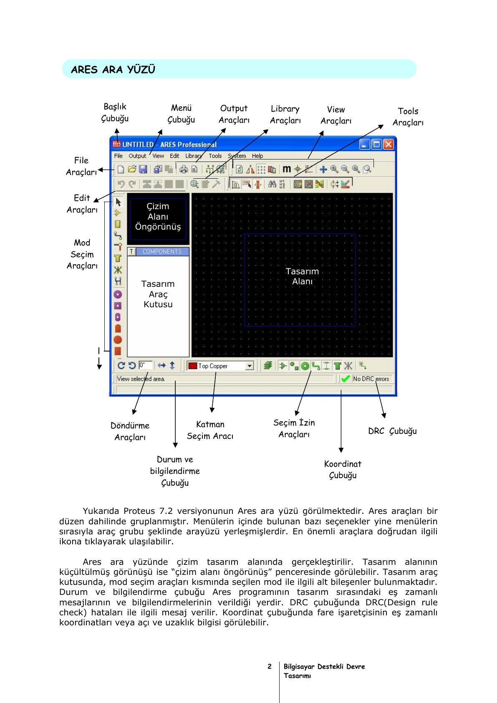

· EEM202
EEM202 Circuit Theory II: Printed Circuit Board (PCB) Design with ARES ("Computer-Aided Circuit Design" Note)
EEM202 – Devre Teorisi II · 14.08.2009 · 16.10.2026
This post introduces the "D – ARES PCB Design Program" section of a course note titled "Computer-Aided Circuit Design", stored in the "serkut_devre" subfolder of the course folder (37 pages, PDF dated August 2009; the document does not name its author). It describes the ARES program of Proteus 7.2; it was placed in the folder because Proteus was used in EEM202 term projects and in the laboratory. The content of the section is summarized below by headings and main points; the original PDF can be downloaded at the end of the post.
Note: This content belongs to a third-party source; it is shared for archival and nostalgic purposes with the source credited. It will be removed at the request of the rights holder.
Rules to Observe in PCB Design
- The dimensions of the components must be known in advance for the circuit whose PCB will be produced, and the design must be made according to these dimensions. If the PCB is to be fitted into an enclosure, the dimensions of the enclosure must also be taken into account.
- In high-frequency circuits, inductors should not be placed side by side; it must be remembered that parallel tracks will have a capacitive effect.
- Space must be reserved for heat sinks on high-power components.
- Components must be easy to desolder and solder back during repair.
- Copper tracks must be drawn thick or thin according to the current they will carry (for example, 2.5 mm track width for 1 A).
- A circuit as small and as low-cost as possible should be drawn.
General Introduction to ARES
ARES (Advanced Routing and Editing Software) is the sub-package of the Proteus package used for PCB design:
- It can draw double-layer and up to 16-layer PCBs; the board size can be set up to 10 m².
- It can prepare PCBs automatically and produce a report of errors in the connections.
- It has a two-dimensional symbol library and SMD symbols; new components can be created.
- Unlimited pads, tracks and vias can be used; output can be obtained in various graphic formats.
The interface includes the title and menu bar, the File/Output/View/Edit/Library/Tools toolbar groups, the design area and the reduced overview window, the mode selection tools and the design toolbox, the rotation and layer selection tools, the DRC (Design Rule Check) bar, and the status and coordinate bars.

Menus
- File: New/Load/Save Layout, loading, saving and deleting netlists, DXF and bitmap import, area import and export, Board Statistics (numbers of tracks, pads and vias, and board dimensions).
- Output: printing (Artwork, Solder resist, SMT mask and Drill plot modes, and mirror image), output area and origin, bitmap/metafile/DXF/EPS export, manufacturing notes, CAD-CAM (Gerber) output and Gerber viewer, 3D view, pick-and-place (PKP) and test point (TPI) files.
- View: redraw, flip, grid, layers, switching between metric/inch (thou) units (1 inch = 1000 th, 1 mm ≈ 40 th), temporary origin, distance and angle measurement with Z-Theta, Goto XY/Component/Pin, Snap (1–5–25–50 th), Pan and Zoom.
- Edit: undo/redo, clipboard operations, alignment, Replicate, bring to front/send to back, converting vias to pads.
- Library: creating symbols and packages (Make Symbol, Make Package), Decompose, compiling into the library, library manager, new pad/track/via styles.
- Tools: track angle lock, automatic track selection and narrowing, zone refresh, Design Rule Checker, search and tagging, auto-naming, Auto Placer, Auto Router, Gateswap Optimizer, power plane generator, renumbering, connectivity checker, Electra Auto Router.
- System: colors, default design rules, environment, selection filter, keyboard shortcuts, grids, layer usage and pairs, tracks, plotter pens, strategies, template, workspace, zones.
The equivalents of the same functions in the toolbars (File, Output, View, Edit, Library, Tools, mode selection, rotation, layer selection and selection permission tools) are then shown one by one.
Library and Component Creation
The ARES library consists of the package library (the PCB counterparts of electronic components) and the symbol library (other two-dimensional drawings).
- Application 1: A drawing consisting of a 400 th × 400 th square, its diagonals and an arc of 250 th radius is selected, added to the USERSYM library under the name "SEMBOL1" with Library → Make Symbol, and checked by placing it on a new sheet in "2D graphics Symbol mode".
- Application 2: The LED symbol in ISIS has no PCB package counterpart. The "led" package in ARES is added in ISIS with the Packaging Tool, the A and K pins of the symbol are matched to the A and K pads of the package, and it is saved to the USERDVC library with Assign Packages.
- Application 3: The dimensions of a pushbutton at hand are measured with a ruler (12 mm body, 1 mm lead thickness); the units are switched to metric with 1 mm snap, a 12 mm square and an 8 mm diameter circle are drawn on the Top Silk layer, four pads are placed and numbered using the C-90-40 pad style (outer diameter 90 th ≈ 2.25 mm) with an inner diameter of 40 th for the 1 mm leads, and it is saved as a package; it is linked to the pushbutton symbol in ISIS.
Printed Circuit Design Applications
- Application 4: A 25 mm × 25 mm board outline is drawn on the Board Edge layer; placing pads, tracks and vias, and connecting two pads with a track.
- Application 5: Editing drawn tracks and vias (right-click menu, trim commands), editing pads and two-dimensional shapes; smoothing tracks at corners (mitre).
- Application 6: The general right-click editing menu of a selected drawing: rotation, X/Y mirroring, Block Copy/Move/Rotate/Delete, cutting and copying to the clipboard, deselecting, creating a package (Make Package) or a symbol (Make 2D Graphics Symbol) from the selected components.
- Application 7: Manual single-sided PCB design without automatic routing: a package with a C-70-30 pad and an ISIS symbol are prepared for the CNY70 optical sensor, and the pins are matched as 1-A, 2-K, 3-C, 4-E; the circuit drawn in ISIS is transferred to ARES with "netlist transfer to Ares", a board outline of about 25 mm × 40 mm is drawn on the Board Edge layer, the components are placed 5 mm apart (the CNY70 on the copper side, with mirror image), M3 screw holes are placed at the corners, and the pads are connected with tracks on the Bottom Copper layer.
- Application 8: Double-sided PCB with automatic routing: A triac control circuit is drawn in ISIS (making sure every component has a PCB counterpart), transferred to ARES, and the board is designed with automatic placement and routing.
Downloadable File
The original 37-page PDF can be downloaded below.